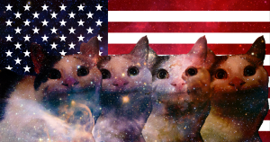
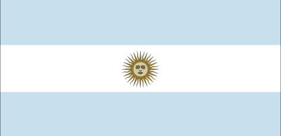

add me on discrd 💗
add me on discrd 💗introduction
boat [also known as boat the goat, b.o.a.t, the boat of all time, boat from china, and el. at.] is the newest bot developed by katrewdustries inc, from its soft launch in september of 2024, boat was on the verge of being "abandoned" many times, but ended up being the project katrewdustires and their staff came back to regularly. boat continues to be a based and most advanced [and sadly, likely the last] bot created for platform discord. it has a bunch of nextgen features, some of which were inspired by globalutilities [such as the katnet, economy, and other trivial features], alongside other bots that katdustries developed.main features innit
fully functional and totally legal, reliable and noncorrupt economy with a totally responsible ceo [katrekat]!katnet [basic functionality and is more of a concept atm]
fully fledged achievement system
custom profiles, unique distinct look
multi-language support [natively supports four languages, see below], albeit has other unnecessary languages/fakeguages.
very legal and supervised casino/gamblign system. 🤑🤑🤑💰💰
advanced logging system with colors n shi
many fun features!
shop system [provided by vucicbot, see basecomust.github.io for more details!] and fun integration with vucicbot.
supported languages
 english [canadian / waffelican]
 argentinean 💀 [latam mexican]
technologies utilized
boat was coded using python, visual studio code insiders [thank you, microsoft, for making something work well 😘😘], using libraries: pycord, utilizing .json for storage / data. also, big thanks to mr discord for allowing us to make epic bots on their platform, however, katdustries highly condemns adding features, that bots have already implemented, it is, however, understandable, for them to want to do so, however, they could pay more attention to botmakers and such. :) that made zero sense, ill shut up :(currency
KATS [previously supposed to be "Solars"], 16 KATS:1 Vucic Social Credit, meaning that for Vucic shop, you need to take the social credit amount and multiply it by 16 to get the price of the item in KATS. Vucic currently supports KATS, and is a valid payment method. The exchange is immediate and seamless between bots, do not resort to third party exchanges.supported servers
currently only approved servers [currently, base comust, sveicarija, bacair reserch facility] have full unwaivered support with no major limitations, some boat's features might be limited or unavailable outside of these servers. currently, membership for such servers is not on the way, nor is it ever planned. wat are you looking for?basecomust website :) / vucic's home